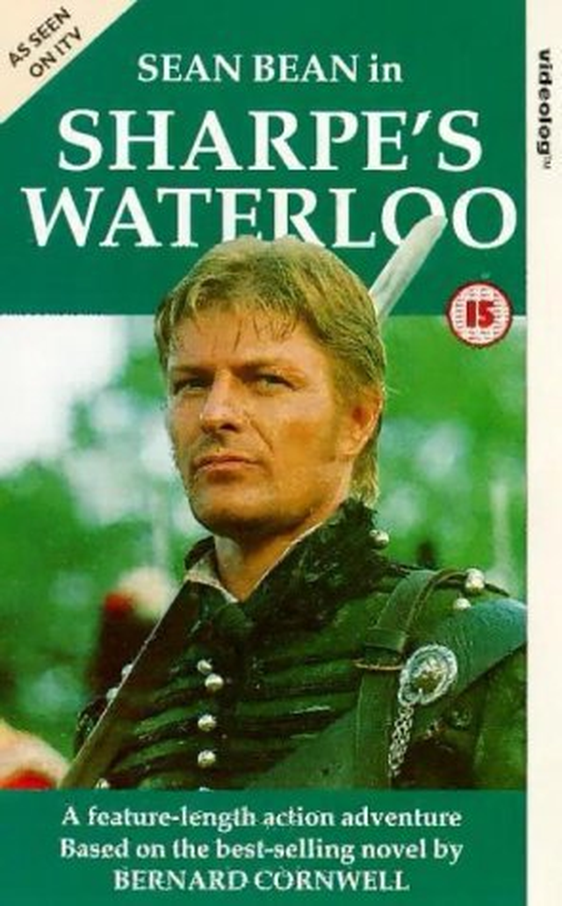

전사자 유품의 경매 광경 - Sharpe's Waterloo 중에서
게시: 2019-02-21T06:30:00+09:00
나폴레옹 전쟁 당시 스페인에서 싸우던 영국군 장교의 이야기를 그린 시리즈물, Sharpe 시리즈 중에서 한 장면입니다.
아래는 그 중 한 장면입니다. 당시 영국군에서는 전사자의 유품을 그대로 유가족에게 보내지 않고, 동료들에게 경매에 붙여 매각한 뒤 그 돈을 유가족에게 송금하는 것이 전통이었습니다. 이는 해군에서도 마찬가지였고요. 아마도 당시에는 DHL이나 FEDEX가 없어서 그랬나 봅니다. 아래 본문에 보면, 급여 담당관에게 돈의 송금을 맡기고, 그 급여 담당관은 일부 금액을 수수료로 떼낸다고 되어 있습니다. 그 수수료는 대략 몇%였을까요 ? 대략 7~8% 정도였다고 합니다. 당시에는 인플레가 심한 편이 아니었다는 점을 생각해보면 너무 심하게 떼는 것 같기도 하고, 반대로 당시에는 온라인 송금도 없었다는 것을 생각하면, 그리 많이 떼는 것 같지도 않군요.

Sharpe's Waterloo by Bernard Cornwell (배경: 1815년 벨기에) ----------------------
왕세자 직속 지원병 연대의 제1중대 지휘관인 해리 프라이스 대위는 탄약상자를 쌓아 만든 임시 연단 위에 올라섰다. 그의 앞에는 근처에 숙영하고 있는 여러 대대에서 온 40~50명의 장교들이 비로 흠뻑 젖은 벌판 위에 모여있었다. 세차게 내리던 비가 이제 부슬비로 변하면서, 서쪽에서는 구름뒤의 희미한 해가 서서히 지고 있었다.
"신사 여러분, 준비되셨나요 ?" 프라이스가 외쳤다.
"시작하라구 !"
프라이스는 아주 즐거워하면서, 조롱을 퍼붓는 장교들에게 허리를 굽혀 인사했다. 그리고는 특무상사 헉필드로부터 첫번째 물품을 건네 받았다. 해리 프라이스가 희미한 석양 빛 속에 높이 쳐든 것은 뚜껑이 은으로 된 회중시계였다.
"회중시계입니다, 신사 여러분, 고 미클화이트 소령의 유품이지요 ! 이 물건은 아주 약간만 피에 젖었으므로, 잘 닦아내기만 하면 시간이 아주 잘 맞을 겁니다. 신사 여러분, 여러분께 엑세터의 마스터슨 제의 회중 시계를 선보입니다 !"
"마스터슨이라고는 들어본 적도 없어 !" 누군가가 외쳤다.
"댁의 무식함은 우리의 관심사가 아닙니다. 마스터슨은 아주 유서깊고 명성있는 회사입니다. 제 아버지께서는 항상 마스터슨 시계로 시간을 맞추셨고, 덕분에 평생 단 한번도 시골 무도회에 늦으신 적이 없었답니다. 자, 미클화이트 소령의 시계에 1파운드 부르실 분 있을까요 ?"
"1실링 ! (1/20파운드, 당시 일반 사병의 하루 일당이 1실링. 현재 가치로 대략 1만2천원 :역주)"
"자, 협조 좀 합시다 ! 미클화이트 소령은 미망인과 세명의 심성고운 자녀를 남겼습니다. 여러분같으면 어떤 도둑 심보의 후레자식들이 관대하질 않아서 여러분의 부인과 아이들이 빈곤하게 되는 걸 바라시진 않겠지요 ! 자, 1파운드라는 소리를 좀 들어보자구요 !"
"1플로린 ! (2실링:역주)"
"이게 무슨 인형가게인줄 아쇼, 신사여러분 ! 1파운드, 누구 1파운드 부를 사람 ?"
아무도 없었다. 결국 미클화이트의 시계는 6실링에 팔렸고, 인장 반지는 1실링에 팔렸다. 칼라인 대위 물건이던 멋진 은잔은 1파운드였고, 그날 경매에서 가장 고가에 팔린 것은 칼라인 대위의 검이었는데 10기니(1기니는 21실링:역주)에 팔렸다. 해리 프라이스가 그날 저녁 팔아야 했던 물건은 62개나 되었는데, 모두 그날 콰트르 브라(Quatre Bras, 4개의 팔이라는 뜻)에서 프랑스 기병대에게 당한 왕세자 직속 지원병 연대 장교의 유품이었다. 경매 가격은 무척 낮은 편이었는데, 이는 당연한 것이, 그날 프랑스 기병대가 하도 많은 장교들을 죽여서 시장에 물건이 아주 많이 나왔기 때문이었다. 하지만 오늘 밤의 이 물건들은 내일 쏟아져 나올 것에 비하면 아무것도 아니라고 프라이스는 생각했다.
"칼라인 대위의 박차 한쌍입니다, 신사 여러분 ! 금제품입니다, 제가 틀린 것이 아니라면..." 그 주장은 웃기지도 않는다는 조롱을 받았다. "1파운드 있습니까 ?"
"6펜스. (1페니는 1/12 실링)"
"이런 불쌍힐 정도로 빌어먹을 친구들 같으니라고. 내가 2펜스(당시 가장 낮은 단위의 동전이 2펜스였는지, 2펜스라는 것은 싸구려라는 뜻과 동의어: 역주)에 막 내줘버리는 물건이 댁들 물건이라고 생각하면 어떤 기분이 들겠소 ? 좀 관대해집시다, 신사여러분 ! 미망인들을 생각하세요 !"
"칼라인은 미혼이었는데 !" 한 중위가 외쳤다.
"그럼 그 인간의 정부를 위해서 1기니 ! 좀 기독교적인 관대함을 보여줘요, 신사 여러분 !"
"내가 그 인간의 정부를 1기니에 사지 ! 하지만 그 인간의 박차는 6펜스야 !"
미클화이트의 유품은 다합쳐서 8파운드 14실링하고도 6펜스에 팔렸다. 칼라인 대위의 소지품은 훨씬 더 많이 값을 받았는데, 그래도 원가보다 훨씬 싼 가격이었다. 항상 기병대 장교처럼 보이고 싶었던 해리 프라이스는 그 박차를 9펜스에 자신이 샀다. 그는 칼라인의 털가죽으로 가장자리를 댄 펠리즈도 샀다. 이는 부유한 장교들이 유행으로 입던, 우아하지만 전혀 실용적이지 못한 옷인데, 망토처럼 한쪽 어깨에 걸쳐 입는 짧은 자켓이었다. 해리 프라이스는 칼라인의 값비싼 장식 의상을 자신의 초라한 붉은 코트 위에 입는 것에 무한한 만족감을 느꼈다.
그는 돈과 어음을 대대의 급여담당관에게 전달했고, 이 담당자는 자기 수수료를 챙긴 뒤에, 그 돈을 전사자의 유족들에게 보내게 되어 있었다.
해리 프라이스는 박차를 자신의 장화에 달고는, 울타리를 건너 다른 장교들이 비참한 움막에서 추위에 떨고 있는 곳으로 물을 첨벙첨벙 튀기며 걸어갔다.
그는 달렘보드 소령이 울타리 저 너머에 기대어 앉아있는 것을 보았다. "오늘 경매에는 참여 안했지요, 피터 ?"
"오늘은 그만, 해리, 오늘은 제발 그만." 달렘보드의 목소리는 더이상의 대화가 반갑지 않다는 듯, 별로 우호적이지 않았다.
프라이스는 달렘보드의 기분이 안 좋은 것을 눈치채고는 그냥 울타리를 따라 좀 걸어간 뒤, 앉아서 그의 뒤꿈치를 장식하고 있는 박차를 감탄하듯 쳐다 보았다. 이 박차를 차고 가면, 파리의 숙녀들에게 틀림없이 깊은 인상을 줄 것이고, 사실 그것이 해리 프라이스가 싸우는 최상의 동기였다. 여자들은 외국 군인에게 끌리는 법이었고, 특히 그 군인이 박차와 펠리즈로 장식한 경우는 더욱 그럴 것이었다.
(목요일이라 전에 다음 블로그에 올렸던 것 다시 올립니다.)